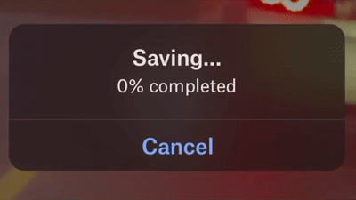

I work on AI + developer tools.
How many decades until software has semi-accurate progress bars?
— Austin Henley (@AustinZHenley) July 7, 2020
Update 11/27: See the discussion on Hacker News.
Examples of inaccurate progress bars are everywhere. If systems can't accurately predict how long a task will take, then fine. Estimating is hard.
But why do they insist on lying?
Progress bars are generally implemented by hard coding segments of work with a value. These values are specified by the programmer (and hopefully aren't completely made up). Finish this piece then add 3% to the progress bar. Download a file and add up to 10% based on how many bytes have been downloaded. Seems reasonable.
But over the summer I updated one of my Apple products and it continued to tell me that there was about 8 minutes remaining... for over an hour! Picking a random number would have been more accurate!
Ok, updating a device is a complex scenario with a lot of things going on.
Let's look at a simple example: downloading a photo from Dropbox. The progress bar is really just based on my internet speed, right?
And yet, every single photo and video that I export from Dropbox finishes at 75%, regardless of how big the file is.
Another example? Every time I upload a lecture video to YouTube, it goes back-and-forth from "0% processed" and "100% processed", repeatedly, until it is actually done. I've never seen it say any other number.
If you don't know how much time is remaining, then don't lie about it.
Instead, you can show that the system is still working and keep the user updated with what the current task is. Just make sure the task changes every few seconds or minutes, depending on user expectations, so that they know it isn't frozen.
A lot of people own an iPhone and there are relatively few models out there. How should Apple calculate the amount of time required to update iOS? By telling you how long it took other users!
Try out some of these smart people's ideas:
Not sure if fuzzing / magic numbers is where the action is at, but maybe with enough training data one could use dynamic analysis + machine learning to build a predictor? Sounds like a fun project for sure.
— Rohan Padhye (@moarbugs) July 7, 2020
Progress bars are an interesting topic in human-computer interaction. If you want to know more, there's an interesting podcast episode from 99% Invisible: Wait Wait... Tell Me!